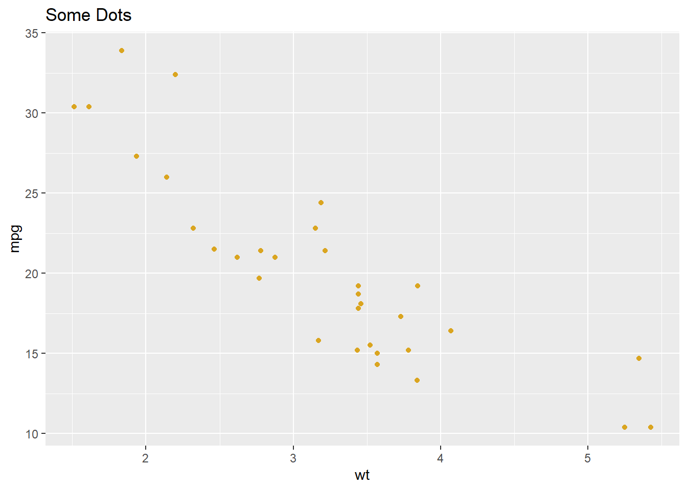

2 + 3[1] 5(2 + 3) * 7[1] 35pi / 4[1] 0.7853982This lab is designed to introduce you to R and RStudio, which we will use for all future computer labs. R is a high-level scientific scripting (programming) language for analyzing and visualizing data. RStudio provides a useful front-end visual interface for writing R code and viewing results. “High-level” here means that the grammar of the R programming language is designed to be reasonably intuitive to humans, as opposed to other programming languages that are optimized to be machine-readable. R is part of a whole family of high-level programming languages – Python and Matlab are also very popular, plus ArcGIS, JavaScript, etc., etc. When learning any of these languages, the rule of thumb is that the first one takes the most time to learn, but after that, the next one is relatively easy to learn, because they all follow similar conventions. Knowing one or more of these languages is a foundational skill in the fast-growing field of the data sciences.
Most data anlysis and modelling is done in languages such as R, Python or Julia. The steep learning curve is worth it. We cannot teach everything in one lab so in the Section 6 section are links to resources (some of which this lab is based on) that include everything needed for this module.
It is important to structure projects carefully so that data and scripts are stored in the same location. Usually a project’s structure will have a high level directory that contains several sub-directories for data and outputs. For example you might want to create a high level directory called ‘02-intro-to-r’, and two sub-directories named ‘data’ and ‘outputs’ respectively that we will use later. For reference see here.
Create a directory named 02-intro-to-R
Create two sub-directories
Fundamentally, R does maths:
R supports mathematical operators:
2 + 3[1] 5(2 + 3) * 7[1] 35pi / 4[1] 0.7853982Open up RStudio click ‘file’ -> ‘New File’ -> ‘R Script’
Using mathematical operators, try subtract your age from the current year
Type the calculation into your R script, and use control + enter to run the line of code
Save your R script to the high level directory you created earlier called 02-intro-to-r
Typicall we work with ‘objects’ in R. An object can be a value, word, data, matrix, or any acceptable class in R. Objects are stored in the ‘environment’ (by default, the top right panel) in RStudio. To create an object we use the ’assignment’operaror (<-).
radius <- 3
area <- pi * radius^2These lines of code first assign a value of 3 to an object called radius and then assign the result of a calculation (using the object radius) to a second object called ‘area’. pi is predefined in R; thus, does not need to be assigned to an object.
Note that assignment does not print the result. To do so we can ‘call’ the object by running it (control enter).
radius[1] 3area[1] 28.27433Most functions in R
If you can’t find the answer in the resources provided feel free to ask questions on the Geog523 slack channel. We encourage students to help each other out but will step in if needed.
Best practice for asking questions is to create a ‘reprex’. Often you will solve your own question by working it through.
Here is some text.
And here is a plot:
library(ggplot2)
ggplot() +
geom_point(
data = mtcars,
aes(wt, mpg),
color = "goldenrod"
) +
labs(
title = "Some Dots"
) 